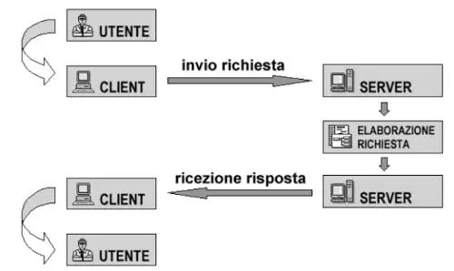

COME FUNZIONA IL MODELLO CLIENT/SERVER
Il funzionamento del modello Client-Server segue questi punti:
questi passaggi vengono eseguiti da processi in esecuzione su due calcolatori
differenti.
Schema esplicativo:

DISTINZIONE TRA SERVER E CLIENT
Il server è ospitato su un "host" in ascolto tramite un socket su una determinata porta
in attesa che un client richieda la connessione.
Il client invia la richiesta tramita la porta su cui il server è in ascolto.
Su uno stesso host possono essere ospitati diversi server in ascolto su porte
diverse, ad esempio per un servizio HTTP il server rimarrà in attesa sulla porta 80.
SOCKET
Un socket formato dalla coppia: indirizzo IP;numero porta, permette di individuare
il gestore di un servizio.
I socket possono essere:
Datagram Socket: usa una connessione basata sul protocollo UDP, infatti Il client e il
server non instaurano una vera a propria connessione, ma il client comunica direttamente
con il server, quando vuole.
Stream Socket: utilizzano una connessione basata sul protocollo TCP.
Vengono inizializzati i processi client e server.
La connessione richiede una richiesta e una accettazione di connessione (es 3WHS).